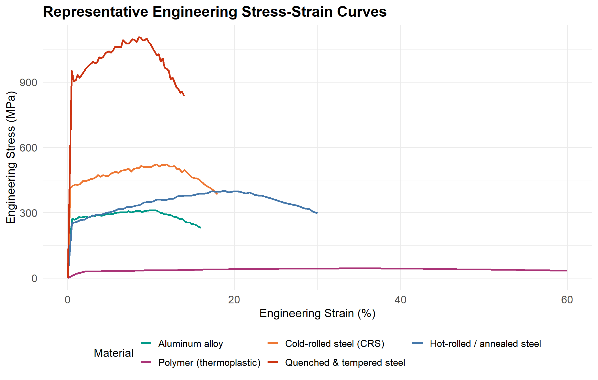
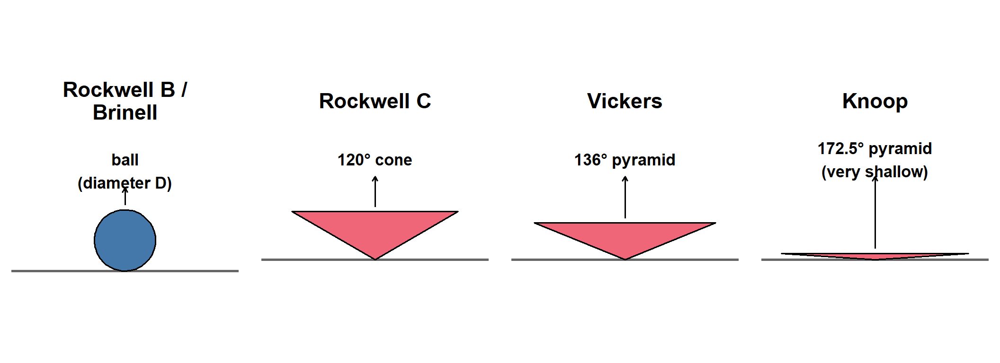
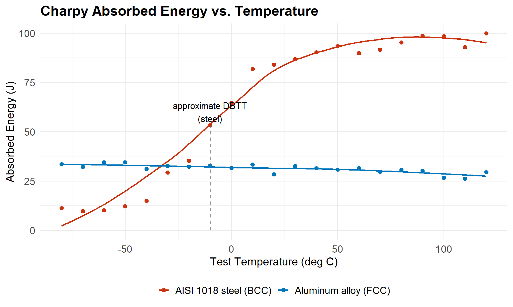
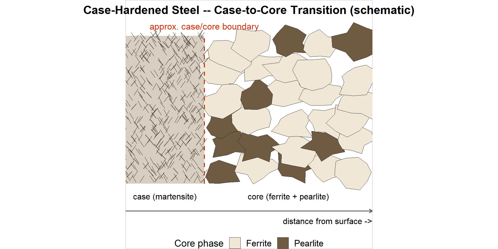
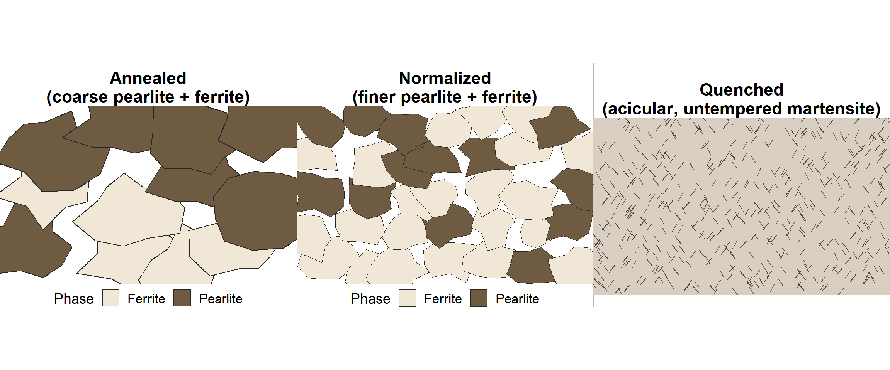

20 Materials Testing: Tensile, Hardness, Impact, and Metallography
20.1 Learning Objectives
By the end of this chapter, you will be able to:
- Calculate engineering stress, strain, elastic modulus, percent elongation, and percent reduction of area from tensile test data.
- Read a stress-strain curve region by region and connect each region to what is happening to the metal’s dislocations and grains.
- Explain what each hardness scale (Rockwell B/C, Brinell, Vickers, Knoop) measures, when to use it, and why the scales aren’t directly interchangeable.
- Explain what a Charpy test measures, predict how a BCC steel’s toughness changes with temperature, and describe the resulting fracture surfaces.
- Explain why sectioning, mounting, grinding, polishing, and etching are necessary before a specimen can be examined under a microscope, and read a basic micrograph.
- Compare steel’s behaviour under these same tests to aluminum, stainless steel, cast iron, copper/brass, and polymers.
This is Part B of a two-part chapter. Part A covered what steel is made of and how heat treatment changes it — you’ll need that background here, especially the phase diagram (Section 19.5) and the five heat treatments (Section 19.6). This part covers how we measure the properties heat treatment changes, and connects directly to your three materials-testing labs: Hardness Testing (Rockwell and Brinell), Tensile and Microhardness Testing of Case-Hardened Steel, and Charpy Impact Testing and the Ductile-to-Brittle Transition (see the Labs chapter for the full procedures — this chapter does not repeat them).
20.2 Tensile Testing Theory
NoteBefore you read on
Picture pulling on a rubber band, then on a steel paperclip, until each breaks. Which one stretches more before it snaps? Which one “gives” noticeably before it breaks, versus breaking almost without warning? Keep those two objects in mind — you’re about to learn the vocabulary for exactly what you already felt.
20.2.1 Stress and Strain
A tensile test pulls a standardized specimen apart at a controlled rate while recording load and extension — the same basic principle whether the machine is testing a bolt for an automotive supplier or armor plate for a defense contractor. Raw load and extension depend on specimen size, so we convert them to size-independent quantities:
\[\sigma = \frac{P}{A_0} \tag{20.1}\]
\[\varepsilon = \frac{\Delta L}{L_0} \tag{20.2}\]
where \(\sigma\) is engineering stress (MPa, or psi/ksi), \(P\) is the applied load (N or lbf), \(A_0\) is the original cross-sectional area, \(\varepsilon\) is engineering strain (dimensionless, or %), \(\Delta L\) is the change in length, and \(L_0\) is the original gauge length. Both use the original dimensions throughout the test — that’s what makes them “engineering” stress and strain, as opposed to true stress and strain, which continuously account for the specimen’s shrinking cross-section (true stress/strain is more accurate at large deformation but is beyond this course; ASTM E8/E8M, the standard tensile test method for metals, is written around engineering stress and strain).
20.2.2 The Stress-Strain Curve, Region by Region
Follow any one curve in Figure 20.1 from left to right — this is the region-by-region reading you’ll do on your own tensile lab data:
- Elastic region: the initial straight-line portion. Stress and strain are directly proportional — this is Hooke’s Law, \(\sigma = E\varepsilon\), where \(E\) is the modulus of elasticity (Young’s modulus), the slope of this line. Physically, atoms are being stretched slightly away from their equilibrium spacing, and the bonds pull them right back the instant the load is removed — no dislocations have moved yet, so this deformation is fully recoverable. Steel’s modulus (~200 GPa) is essentially the same whether the steel is annealed, cold-worked, or quenched and tempered — heat treatment barely touches elastic modulus, because it’s a property of the atomic bonding itself, not the microstructure. This is why all the steel curves in Figure 20.1 start with the same slope, while aluminum (weaker metallic bonding, ~69 GPa) and the polymer (van der Waals and covalent bonding between long chains, ~2 GPa or less) start with much shallower slopes.
- Yield point: the stress at which the material stops behaving elastically and dislocations begin moving enough to produce permanent (plastic) deformation. Some steels show a sharp, obvious yield point (a momentary load drop) because dislocations are initially “pinned” by interstitial carbon/nitrogen atoms and need a burst of extra stress to break free before they can move freely. Most other metals — aluminum, many steels, and virtually all non-ferrous alloys — yield gradually with no sharp point, so engineers define an offset instead: the 0.2% offset yield strength is found by drawing a line parallel to the elastic region, starting from 0.2% strain, and reading where it intersects the curve.
- Strain hardening (plastic region): as dislocations move, they multiply and tangle with each other and with grain boundaries — more and more obstacles pile up in their own path, so more stress is needed to keep deformation going. This is the same physical mechanism, from the atomic level, that makes cold-rolled steel stronger than hot-rolled steel (Section 19.4): CRS has already been strain hardened by the rolling process before you ever put it in the tensile machine.
- Ultimate tensile strength (UTS): the highest engineering stress reached, at the peak of the curve. Beyond this point, strain hardening in the gauge section can no longer keep up with the loss of cross-sectional area, and deformation localizes.
- Necking: the specimen begins to thin locally rather than uniformly along its length. Because engineering stress uses the original area (Equation 20.1), the calculated engineering stress actually appears to drop after UTS even though the true stress at the neck keeps rising — this is purely a bookkeeping effect of using \(A_0\) instead of the shrinking real area.
- Fracture: final separation, at the end of the curve.
20.2.3 Percent Elongation and Reduction of Area
Two standard ductility measures are taken after fracture, by fitting the broken pieces back together (per ASTM E8/E8M):
\[\%EL = \frac{L_f - L_0}{L_0} \times 100 \tag{20.3}\]
\[\%RA = \frac{A_0 - A_f}{A_0} \times 100 \tag{20.4}\]
where \(L_f\) is the final gauge length (measured across the fracture) and \(A_f\) is the final (minimum, necked-down) cross-sectional area. Both numbers answer “how much did this material deform before it broke?” — %EL captures length change over the whole gauge length, %RA captures the local necking right at the fracture, so %RA is typically the larger, more sensitive number for very ductile materials.
20.2.4 Ductile vs. Brittle Fracture Surfaces
A ductile fracture (typical of annealed or hot-rolled steel, aluminum, copper) shows visible necking and a rough, fibrous, “cup-and-cone” surface: a flat central fibrous zone where microscopic voids nucleated (often at inclusions), grew, and coalesced, surrounded by a shear lip at roughly 45° where final separation occurred by shear. A brittle fracture (typical of untempered martensite, cast iron, or any ductile metal tested below its ductile-to-brittle transition temperature — Section 20.4) shows little to no necking and a flat, bright, crystalline-looking surface, because the crack propagated rapidly along (or across) grains with almost no plastic deformation absorbing energy first.
TipIndustry application
Automotive: crash-worthiness design deliberately uses ductile, lower-strength steel in some body structures so they crumple (absorbing crash energy through large plastic deformation) rather than shattering. Food processing: conveyor components are chosen for enough ductility to dent rather than fracture under an accidental impact, since a fractured piece in a food line is a contamination hazard. Defense: fractography (reading a fracture surface) is standard failure-analysis practice for a cracked component — the surface itself tells you whether the failure was ductile overload, brittle fracture, or fatigue, often without needing to test another sample.
20.2.5 Worked Examples
# Tensile test data for a round specimen, per ASTM E8/E8M style reporting
D0 <- 12.83 # mm, original diameter (0.505 in specimen)
L0 <- 50.0 # mm, original gauge length
P_yield <- 41500 # N, load at 0.2% offset yield
P_max <- 58200 # N, maximum (UTS) load
Lf <- 61.8 # mm, final gauge length after fracture
Df <- 9.40 # mm, minimum diameter after fracture
A0 <- pi * (D0/2)^2
Af <- pi * (Df/2)^2
sigma_yield <- P_yield / A0
sigma_uts <- P_max / A0
pct_elong <- (Lf - L0) / L0 * 100
pct_ra <- (A0 - Af) / A0 * 100
cat(sprintf("Original area A0 = %.2f mm^2\n", A0))
cat(sprintf("0.2%% offset yield strength = %.1f MPa\n", sigma_yield))
cat(sprintf("Ultimate tensile strength = %.1f MPa\n", sigma_uts))
cat(sprintf("Percent elongation = %.1f%%\n", pct_elong))
cat(sprintf("Percent reduction of area = %.1f%%\n", pct_ra))Original area A0 = 129.28 mm^2
0.2% offset yield strength = 321.0 MPa
Ultimate tensile strength = 450.2 MPa
Percent elongation = 23.6%
Percent reduction of area = 46.3%Live cell — try changing the loads and final dimensions to see how yield strength, UTS, %EL, and %RA respond. A brittle specimen would show a much smaller Lf - L0 and D0 - Df.
Live cell — this specimen breaks well before it necks noticeably. Try small Lf and Df changes and see how brittle behaviour (low %EL, low %RA) looks compared to the ductile example above.
TipQuick check
Looking back at Figure 20.1: which curve would you expect from the as-quenched (untempered) specimen you’ll encounter conceptually in the hardness lab, if it were pulled in tension instead? (Answer: highest strength, but the shortest, steepest curve of all — even less strain to failure than the quenched-and-tempered curve shown, since tempering is what restores ductility; see Section 19.6.4.)
20.3 Hardness and Microhardness Theory
NoteBefore you read on
Press your thumbnail into a pencil eraser, then into a wooden pencil. One dents easily, one barely marks at all. That’s hardness, felt rather than measured — the rest of this section is just making that comparison precise and repeatable.
20.3.1 What Hardness Actually Measures
Hardness is a material’s resistance to localized permanent (plastic) deformation — specifically, resistance to being indented by a harder object under a known load. It is not a fundamental material property the way stress and strain are; it’s a comparative, standardized test. But because it correlates well with strength (Section 20.3.4) and is fast, cheap, and often non-destructive, it’s one of the most-used tests on a shop floor — exactly why it’s the quickest way to check what a heat treatment actually did to a part.
20.3.2 Rockwell, Brinell, Vickers, and Knoop
| Method | Indenter | Load | What it reads | Typical use |
|---|---|---|---|---|
| Rockwell B (HRB) | 1/16 in (1.588 mm) steel ball | 10 kgf minor, 100 kgf major | Depth of penetration, converted to a dial/digital number | Softer materials: annealed or low-carbon steel, aluminum, brass |
| Rockwell C (HRC) | 120° diamond cone (“brale”) | 10 kgf minor, 150 kgf major | Depth of penetration | Harder materials: hardened/tempered steel, tool steel |
| Brinell (HBW) | 10 mm tungsten carbide ball | typically 3000 kgf (steel) | Diameter of the indentation, converted to a number | Coarse-grained or non-uniform materials (castings), where a large indent averages out local variation |
| Vickers (HV) | Square-based diamond pyramid | 1 gf to 120 kgf, chosen by application | Diagonal length of the (square) indentation | Wide range, including microhardness; especially phases, thin sections, weld zones |
| Knoop (HK) | Elongated rhombic-based diamond pyramid | Typically under 1 kgf (microhardness range) | Long diagonal length | Very thin sections/coatings and brittle materials, where Vickers’ more symmetric indent risks cracking the specimen |
Figure 20.2 shows the four indenter shapes from Table 20.1 side by side, drawn to comparable scale. The ball is shared by Rockwell B and Brinell; the Rockwell C cone is a much sharper point than either diamond pyramid; and Vickers vs. Knoop is really a question of how symmetric the pyramid is — Knoop’s very shallow, elongated shape (versus Vickers’ symmetric, deeper pyramid) is exactly what lets it indent thin sections and brittle materials without cracking them.

Rockwell tests in two steps: a small minor load is applied first to seat the indenter and remove the effect of surface roughness, then the much larger major load is applied and removed, and the difference in penetration depth between the two loads is converted directly to a hardness number on the machine’s dial or display — no separate measurement step is needed, which is why Rockwell is the fastest of these tests. Brinell requires measuring the indentation diameter afterward (with a measuring microscope) and converting it via a chart or formula.
Vickers hardness is calculated directly from the applied force and the indentation diagonal:
\[HV = \frac{1.8544\,F}{d^2} \tag{20.5}\]
where \(F\) is the applied load (kgf) and \(d\) is the mean of the two diagonals of the square indentation (mm). Because the indenter is always the same 136° diamond pyramid regardless of load, Vickers numbers are directly comparable across a huge range of loads and material hardnesses — one reason it (and the closely related Knoop test) is the standard choice for microhardness: measuring the hardness of something too small, too thin, or too localized for a full-size Rockwell or Brinell indent, such as:
- An individual phase — e.g., distinguishing the hardness of a specific microconstituent under a microscope, rather than an average over many phases.
- A case-hardened layer — exactly what you’ll do in your tensile/microhardness lab: a series of small Vickers indents stepping inward from the surface of the AISI 1566 specimen, tracing out how hardness falls from the hard, carbon-rich case to the softer core.
- A weld heat-affected zone — mapping hardness across the narrow band of microstructure changed by welding heat.
- Thin sections or coatings — where a full-size Rockwell/Brinell indent would be too deep and would measure the substrate underneath instead of the coating itself.
20.3.3 Why Scale Choice Matters, and Why Conversions Are Approximate
Choosing the wrong scale gives a meaningless or invalid reading: Rockwell B’s soft steel ball would simply punch straight through a hardened steel specimen without giving a useful number, and Rockwell C’s diamond cone on a very soft material can produce an indentation deep enough to bottom out the scale. This is exactly why the hardness lab has you choose the correct combination of indenter and load for each specimen before testing.
Because each scale measures a different physical quantity (depth vs. diameter vs. diagonal, at different loads, with different indenter geometries), there is no exact mathematical conversion between them — only empirical conversion tables, built from testing many samples of similar materials with both methods and tabulating the typical correspondence. ASTM E140 is the standard reference for these conversions, and it explicitly warns that they are most reliable for plain carbon and low-alloy steels, and become progressively less reliable for other materials, unusual heat treatments, or very high/low hardness values outside the range the table was built from. Treat any converted hardness value as an estimate, not a measurement.
20.3.4 The Approximate Hardness-Tensile Strength Relationship
For steels, hardness and tensile strength correlate strongly enough that a widely used rule of thumb exists:
\[\sigma_{UTS} \text{(MPa)} \approx 3.45 \times \text{HB} \tag{20.6}\]
(where HB is the Brinell hardness number). This comes from the same physical root as the hardness-to-conversion-table warning above: it is an empirical correlation for steels, not a law of physics, and it breaks down for cast irons, non-ferrous metals, and materials with an unusual microstructure. Still, it’s genuinely useful on a shop floor: a quick hardness test can give a fast, non-destructive estimate of tensile strength without cutting up a part for a full tensile test.
20.3.5 Sources of Error
- Specimen thickness: too thin, and the indentation can be influenced by the (harder or softer) material or fixture beneath the specimen — a rule of thumb for Rockwell is that specimen thickness should be at least 10 times the indentation depth.
- Edge distance: an indentation placed too close to a specimen edge deforms asymmetrically (material can flow sideways out of the edge instead of being resisted), giving an artificially low reading — standards specify minimum distance from any edge or from another indentation.
- Surface preparation: scale, paint, roughness, or curvature under the indenter distorts the reading; hardness testing (unlike a full micrograph) usually needs a reasonably clean, flat surface, not necessarily a mirror polish.
- Curved surfaces: testing a round bar or curved part changes the effective contact geometry compared to the flat surface the conversion charts assume, and typically requires a correction factor.
Worked example: Vickers hardness calculation (static)
Problem: A Vickers microhardness test at 500 gf (0.5 kgf) produces an indentation with diagonals of 62.4 µm and 63.8 µm. Calculate the Vickers hardness number.
Solution: Convert diagonals to mm and average: \(d = (0.0624 + 0.0638)/2 = 0.0631\) mm.
\[HV = \frac{1.8544 \times 0.5}{0.0631^2} = \frac{0.9272}{0.00398} \approx 233 \text{ HV}\]
For a case-hardened specimen, you’d repeat this calculation at each depth of your traverse and plot HV against distance from the surface — exactly the profile you build in the tensile/microhardness lab.Live cell — try different diagonal measurements and loads. Notice how the same diagonal size at a higher load gives a lower HV, and vice versa — this is why comparing hardness numbers taken at different loads without converting first is a common source of confusion.
Live cell — convert a case-hardened part’s Vickers profile toward the Rockwell C scale used to define case depth. (Real conversion requires the ASTM E140 table; this is a simplified linear approximation for illustration only — never use it for a real report.)
20.4 Impact (Charpy) Testing and Temperature Effects
NoteBefore you read on
Think about a plastic milk jug left outside all winter versus one fresh from the store. The cold one shatters if you drop it; the room-temperature one just bounces. Same material, same shape — only the temperature changed. That’s the ductile-to-brittle transition, and you’re about to see steel do almost exactly the same thing.
20.4.1 Toughness vs. Strength
Toughness is the ability to absorb energy before fracturing — it is not the same thing as strength. A material can be very strong (high UTS) but have low toughness if it fractures with little plastic deformation (as-quenched martensite is the clearest example: very high strength, very low toughness). On a stress-strain curve, toughness is roughly the area under the curve — strength times ductility, not either one alone.
20.4.2 What the Charpy Test Measures
The Charpy impact test (ASTM E23) swings a heavy pendulum from a fixed height to strike a small, standardized, notched bar, breaking it in a fraction of a second. The pendulum’s height before and after the break tells you how much energy the specimen absorbed in fracturing — reported in joules (J) or foot-pounds (ft·lbf). This absorbed energy is the direct measure of impact toughness: a bar that absorbs a lot of energy bent, tore, and consumed energy through plastic deformation before breaking; a bar that absorbs very little snapped almost instantly.
The notch is deliberately machined into the specimen, and it matters enormously: a notch is a stress concentrator, and it also constrains the material at the notch root from deforming freely in all directions (a condition called triaxial stress state), which suppresses the material’s ability to deform plastically right where the crack needs to start. This makes the Charpy test a much harsher, more realistic test of how a material behaves at a stress concentration — a hole, a fillet, a weld toe, a scratch — than a smooth tensile bar ever could be, which is exactly why so many real engineering structures (and Charpy specimens) fail from notches and stress risers rather than from smooth sections.
20.4.3 The Ductile-to-Brittle Transition Temperature (DBTT)
Recall from Section 19.3.2 (Part A) that BCC metals have far fewer easy slip systems than FCC metals. At room temperature, thermal energy is enough to help dislocations in a BCC steel overcome the resistance to slip and move relatively freely, so the steel behaves in a tough, ductile manner. Cool it down, and there is progressively less thermal energy available to assist dislocation motion — at some temperature, moving a crack through the material (brittle fracture) simply requires less energy than moving dislocations to deform around it (ductile fracture), and the material’s failure mode flips from ductile to brittle, often over a surprisingly narrow temperature range. That temperature (range) is the ductile-to-brittle transition temperature (DBTT).
FCC metals (Section 19.3.2) (aluminum, austenitic stainless steel, copper — see Section 20.6) have so many available slip systems that dislocations keep moving relatively easily even at very low temperatures, so they do not show a sharp DBTT — their toughness declines gradually, if at all, as temperature drops, rather than falling off a cliff.

Reading Figure 20.3: at low temperature, the steel sits on a lower shelf of low, roughly constant absorbed energy (brittle behaviour). At high temperature, it sits on an upper shelf of high, roughly constant absorbed energy (ductile behaviour). In between is the transition region, where absorbed energy climbs steeply — this is where the DBTT is reported, sometimes as the temperature at the curve’s midpoint, sometimes as the temperature for a specified minimum energy (different standards/specifications define it slightly differently; report whichever definition your lab template specifies).
Fracture appearance changes right along with the energy: a low-shelf (brittle) fracture is flat and bright, with a granular, crystalline look (individual grain facets reflecting light) and little to no visible shear lip. An upper-shelf (ductile) fracture is dull and fibrous, with a large shear lip — the sloped, 45° rim around the fracture where the material failed by shear rather than cleavage — and specimens through the transition region show a mix, often reported as a percent shear (the fraction of the fracture surface showing ductile shear character rather than flat, brittle cleavage).
20.4.4 Historical Examples
The DBTT is not an academic curiosity — it has caused some of the most famous structural failures in history. During the Second World War, a number of welded Liberty ships fractured suddenly, some literally splitting in half, in cold North Atlantic water (Figure 20.4); investigation found that the hull steel’s DBTT was close to the seawater temperature the ships operated in, and that welded construction (unlike the riveted ships built before it) allowed a crack starting at one flaw to run continuously across an entire welded plate without stopping at a riveted joint. The RMS Titanic’s hull steel has similarly been studied and found to have had a DBTT high enough that, in the near-freezing water of the collision, the steel was likely already on the lower (brittle) shelf, making it far more prone to fracturing on impact than a modern, cold-tolerant steel would be.
The investigation into these failures was led by Cambridge metallurgist Constance Tipper, who showed the cause was brittle fracture of the steel itself rather than poor welding, and developed the low-temperature bend test — the Tipper test — still used to find a steel’s transition temperature. Read more about her work in Imperial College London’s profile of her.
TipIndustry application
Canadian context: pipelines, heavy equipment, and structural steel used outdoors in a Canadian winter (routinely well below −20 °C in much of the country) must be specified with a DBTT safely below the lowest service temperature the structure will see — this is exactly why Charpy testing at multiple sub-zero temperatures, as in your own lab, is standard practice for structural and pipeline steel qualification, not just a classroom exercise. Outdoor equipment, from farm machinery to snow-clearing equipment, faces the same requirement.
20.4.5 Predicting Your Own Lab Results
Your Charpy lab tests AISI 1018 hot-rolled and cold-rolled specimens at approximately −60, −40, −20, 0 °C, room temperature, 60 °C, and 100 °C. Based on everything above, you should predict:
- Low temperatures (−60 to −20 °C): low absorbed energy, flat/bright/granular fracture surface — lower shelf behaviour.
- Around 0 °C to room temperature: rapidly rising absorbed energy as you move through the transition region — exact values will scatter more here than on either shelf, which is normal and expected for a transition-region test.
- High temperatures (60–100 °C): high, roughly leveled-off absorbed energy, dull/fibrous fracture with a large shear lip — upper shelf behaviour.
- Hot-rolled vs. cold-rolled: recall from Section 19.4 (Part A) that cold work raises strength but lowers ductility/toughness. Predict the cold-rolled specimens will generally show lower absorbed energy than hot-rolled at a given temperature, and may show a DBTT shifted to a somewhat higher temperature.
20.4.6 Temperature Effects on Tensile and Hardness Results
Temperature doesn’t only affect impact toughness. Tensile strength and yield strength of steel generally rise somewhat as temperature drops (and ductility drops somewhat too — the same underlying dislocation-mobility story as the DBTT, just measured slowly instead of by impact), while at elevated temperature, strength typically falls and ductility rises. Hardness shows a similar trend — most metals read slightly softer hot and slightly harder cold — which is one reason hardness testing standards call for testing near room temperature unless a test is specifically designed for elevated- or low-temperature service conditions.
20.5 Sectioning and Metallography Theory
NoteBefore you read on
You can’t see individual grains with your bare eyes or even most hand lenses — steel looks like a featureless grey solid at that scale. Metallography is simply the set of steps that gets a metal surface flat, smooth, and chemically revealed enough that a microscope can finally show you the grain structure that’s been controlling all your test results this whole chapter.
20.5.1 Why We Cut, Mount, Grind, Polish, and Etch
Each step in metallographic preparation exists to remove the damage the previous step created, while getting progressively closer to a true, undisturbed view of the microstructure:
- Sectioning (cutting) removes a small, manageable sample from the part, oriented deliberately — recall from Section 19.4.2 that a transverse section (across the bar) and a longitudinal section (along the bar) can look completely different in cold-worked material, so the choice of section is not arbitrary.
- Mounting embeds the small, often awkwardly-shaped sample in a plastic (commonly bakelite, applied hot under pressure) so it can be handled and polished safely and consistently.
- Grinding (successively finer abrasive papers) removes the rough cut surface and the deformation it caused, working down through a sequence of grits until scratches are fine and uniform.
- Polishing (progressively finer abrasive suspensions, down to sub-micron) removes the remaining grinding scratches until the surface is mirror-flat and scratch-free — at this point you can see large features like porosity or graphite flakes (Section 20.6, cast iron), but not yet grain boundaries or phases, because a polished, unetched metal surface reflects light almost uniformly.
- Etching (a mild acid, most commonly 2% nital — nitric acid in alcohol — for plain carbon and low-alloy steels) chemically attacks the surface at a rate that depends on crystallographic orientation and on which phase is present. Grain boundaries, being more reactive/higher-energy regions, etch faster and etch a tiny groove, which scatters light and shows up dark under the microscope; different phases (ferrite vs. pearlite vs. martensite) etch at different rates and therefore show different degrees of light and dark, revealing the microstructure.
ImportantCutting heat and pressure can lie to you
An improperly cut or ground specimen — too much heat from a dull blade, too much pressure during coarse grinding — can locally overheat or cold-work the very surface layer you’re trying to examine, changing the microstructure right where you’re looking (for example, inadvertently tempering martensite near the cut edge, or smearing grains from mechanical damage). This is exactly why the grinding sequence uses copious water cooling and works through a full sequence of grit sizes rather than skipping straight to fine polish — each step is there to remove the damage the previous, coarser step introduced, right down to a damage-free final surface.
20.5.2 Reading a Micrograph
- Ferrite etches lightly and appears as the light-coloured background/matrix phase in a nital-etched plain carbon steel.
- Pearlite etches more heavily (more grain-boundary-like area per unit volume, from all those ferrite/cementite interfaces) and appears darker, sometimes showing a fine striped/lamellar pattern at high magnification, sometimes just appearing as darker patches at low magnification where the lamellae are too fine to resolve.
- Martensite has a very different, characteristic appearance: a fine, needle-like or plate-like (“acicular”) pattern, quite different from the smoother, more rounded grain structure of ferrite/pearlite — a trained eye can usually identify martensite (or tempered martensite, which looks similar but slightly softer-edged after the fine carbide precipitation of tempering) on sight.
- Grain size can be estimated formally using the ASTM E112 grain size number, \(G\) — a higher \(G\) number means smaller (finer) grains, related to the number of grains visible per unit area at a standard magnification (roughly, \(N = 2^{G-1}\) grains per square inch at 100X, though the full standard method involves comparison charts or systematic counting rather than working from this formula directly). For this course, the basic idea to take away is: count or compare, don’t guess — a finer-grained specimen (higher \(G\)) should correlate with the higher strength/hardness predicted by Hall-Petch (Equation 19.1), and this is a useful sanity check between your micrograph and your hardness results on the same specimen.
WarningThese are schematic diagrams, not photomicrographs
Figure 20.5 and Figure 20.6 are simplified illustrations of the pattern each microstructure makes, not real photographs. Your own case-hardened and heat-treated specimens will look noisier, and the case/core boundary will be more gradual than the clean split drawn here.


TipIndustry application
Automotive and defense: failure analysis labs routinely section a failed part right through the crack or fracture origin and prepare a metallographic specimen specifically to answer “was the microstructure what the print specified?” — the wrong hardness, the wrong grain size, or an unexpected phase (like untempered martensite where tempered martensite was specified) shows up immediately once you know how to read it, exactly as you’re learning to do here.
Predict and explain: connecting the metallography to the hardness lab
Question: In the hardness lab you’ll examine (or be told about) annealed, quenched, and normalized specimens of the same steel. Based on this section and Section 19.6 (Part A), predict what each should look like under the microscope, from coarsest/softest-looking to finest/hardest-looking.
Answer: Annealed: coarsest pearlite + ferrite, most relaxed-looking grain structure. Normalized: finer, more uniform pearlite + ferrite than annealed. Quenched (untempered): acicular (needle-like) martensite, visually the most different from the other two — no pearlite lamellae at all if fully martensitic. This visual ranking should match the hardness ranking from the Part A practice problem in Section 19.6.6.20.6 How Other Materials Behave
Everything above was built around plain carbon and low-alloy steel. Here’s how the same tests behave on the other materials you’re likely to encounter in the shop — and in the “two or more materials” set of your tensile lab.
20.6.1 Aluminum Alloys
Aluminum is FCC, so — consistent with Section 20.4.3 — it shows no sharp ductile-to-brittle transition; many aluminum alloys actually get slightly tougher at cryogenic temperatures, which is one reason aluminum is common in low-temperature and aerospace applications. Aluminum cannot be hardened by the quench-and-temper route steel uses (it doesn’t have an analogous martensitic transformation in the alloys used structurally); instead, many aluminum alloys are strengthened by precipitation hardening (also called age hardening): the alloy is heated to dissolve alloying elements into solid solution, quenched to trap them in a supersaturated state, then aged (at room temperature or a moderate elevated temperature) to let extremely fine second-phase particles precipitate out — these tiny particles block dislocation motion much the way cementite does in steel, just via a completely different mechanism. This is what a temper designation like 6061-T6 means: “T6” specifies solution heat treated and artificially aged (as opposed to, say, “T4,” solution heat treated and naturally aged at room temperature, or “O,” fully annealed/softest condition).
20.6.2 Stainless Steels
Not all stainless steels behave alike. Austenitic stainless steels (like the common 304 and 316 grades) are alloyed with enough nickel to keep the FCC austenite structure stable all the way down to room temperature — which is why they don’t transform to ferrite/martensite on cooling the way plain carbon steel does. Two direct, testable consequences follow: 304 is not magnetic (ferrite and martensite are magnetic BCC/BCT structures; stable FCC austenite is not), and 304 cannot be hardened by the heat treatments in this chapter (quench hardening relies on the austenite-to-martensite shear transformation, which austenitic stainless is specifically alloyed to avoid) — its strength comes mainly from cold work (strain hardening) instead. Martensitic stainless steels (like 410, 420) have much lower nickel content, do transform to martensite on quenching just like a carbon steel, and are magnetic — this is genuinely a different metallurgical family from austenitic stainless, not just a different grade number.
20.6.3 Cast Iron
Cast iron is, by definition, iron-carbon alloy above roughly 2.1 wt% carbon (recall Section 19.5.2: this is the composition range above what we called “steel”). At these carbon levels, much of the carbon doesn’t stay dissolved or combined as cementite — it precipitates as free graphite, most commonly as flakes in ordinary “grey” cast iron. Those flakes are essentially internal stress concentrators and crack initiation sites throughout the material, which is why grey cast iron is characteristically brittle, with very low tensile ductility and no useful yield point in the way steel has one — although it is comparatively strong in compression, and its graphite flakes give it excellent vibration damping and machinability. (Ductile, or nodular, cast iron modifies the graphite into rounded nodules instead of sharp flakes, dramatically improving ductility and toughness over grey iron — a good example of how much microstructure, not just composition, controls behaviour.)
20.6.4 Copper and Brass
Copper is FCC, ductile, an excellent electrical and thermal conductor, and — like aluminum — does not show a sharp DBTT. It strengthens primarily by cold work (strain hardening), the same mechanism behind CRS in Section 19.4, and softens (recrystallizes, in the sense of Section 19.4.1) if annealed. Brass (copper-zinc alloy) is also FCC-based at common compositions, generally more machinable than pure copper, and used widely for its combination of corrosion resistance, appearance, and machinability rather than for high strength.
20.6.5 Polymers
Polymers behave completely differently from metals because they aren’t held together by metallic (or even simple ionic/covalent-network) bonding — they’re long molecular chains, tangled together and held by comparatively weak intermolecular forces (with the exception of covalent bonds along each chain). The single most important reference temperature for a polymer’s mechanical behaviour is its glass transition temperature (\(T_g\)): above \(T_g\), chains have enough thermal energy to slide and rearrange somewhat, so the polymer behaves in a relatively soft, flexible, sometimes rubbery manner; below \(T_g\), the chains are essentially frozen in place, and the polymer becomes stiff, glassy, and brittle — a direct parallel to the DBTT idea in Section 20.4.3, though the underlying mechanism (chain mobility, not dislocation motion) is completely different. This is exactly why a rubber gasket or a plastic component can perform well at room temperature but crack or shatter in cold weather — it has been cooled below its \(T_g\).
TipIndustry application
Food processing: many food-contact seals and gaskets are polymers chosen specifically for a \(T_g\) well below the coldest temperature the equipment will see (e.g. cold-storage or freezer environments), for exactly the same reason structural steel is chosen for a DBTT below its service temperature.
| Material | Crystal structure | Heat-treatment hardenable? | Sharp DBTT? | Typical ductility |
|---|---|---|---|---|
| Plain carbon steel | BCC (ferrite) / FCC (austenite, high temp) | Yes (quench + temper) | Yes | Moderate-high (condition dependent) |
| Austenitic stainless (304) | FCC (stable at RT) | No (work-hardens instead) | No | High |
| Aluminum alloy | FCC | No (precipitation/age hardening instead) | No | Moderate-high |
| Grey cast iron | BCC ferrite/pearlite matrix + graphite flakes | Limited (can be heat treated, less common) | N/A (already brittle) | Very low |
| Copper / brass | FCC | No (work-hardens) | No | High |
| Thermoplastic polymer | Amorphous / semi-crystalline chains | Not applicable | Behaves brittle below Tg (similar concept) | Condition/temperature dependent |
Predict and explain: identifying an unknown specimen
Question: In the tensile lab, one of your “unknown” specimens turns out to be non-magnetic, does not respond to any heat treatment you try, and shows high ductility with a smoothly rounded (no sharp point) yield region on its stress-strain curve. What is it likely to be, and why?
Answer: Very likely an austenitic stainless steel (e.g. 304): non-magnetic and heat-treatment-unresponsive both point directly to stable FCC austenite (Section 20.6.2), and FCC metals characteristically show gradual, rounded yielding rather than steel’s sometimes-sharp yield point (Section 20.2.2).20.7 Key Takeaways
- Engineering stress and strain use the original specimen dimensions throughout the test (Equation 20.1, Equation 20.2); modulus of elasticity is set by atomic bonding and barely changes with heat treatment, while yield strength, UTS, and ductility change a great deal.
- The stress-strain curve’s regions map directly to dislocation behaviour: elastic (no dislocation motion), yield (dislocations start moving), strain hardening (dislocations multiply and tangle), necking (localized thinning after UTS).
- Rockwell is fast (direct-reading, depth-based); Brinell averages over a larger area (good for coarse structures); Vickers/Knoop give load-independent, comparable numbers well suited to microhardness — reading a case-hardened profile, a weld zone, or an individual phase.
- Hardness scales are not directly interchangeable; conversions (ASTM E140) are empirical approximations, most reliable for steel.
- The Charpy test measures absorbed energy at fracture — toughness, not strength. BCC steels show a sharp ductile-to-brittle transition temperature (DBTT); FCC metals (aluminum, austenitic stainless, copper) generally do not.
- Metallographic preparation (cut, mount, grind, polish, etch) exists to reveal the true microstructure without introducing new damage at each step; 2% nital etch reveals ferrite, pearlite, and martensite in plain carbon steel by their different etching/reflectivity.
- Steel’s behaviour is the exception, not the rule, among engineering materials: most non-ferrous metals don’t quench-harden the way steel does, and most FCC metals don’t show steel’s sharp DBTT. Polymers show an analogous but mechanistically different transition at their glass transition temperature.
20.8 Glossary
Brinell hardness (HBW) — a hardness test using a large-diameter ball indenter, reading the diameter of the resulting indentation; suited to coarse or non-uniform structures.
Ductile-to-brittle transition temperature (DBTT) — the temperature (range) over which a metal’s fracture behaviour shifts from ductile to brittle; sharp and pronounced in BCC metals, generally absent in FCC metals.
Ductility — a material’s ability to deform plastically before fracture, commonly measured as %EL or %RA.
Elastic modulus (Young’s modulus, E) — the slope of the elastic (straight-line) portion of a stress-strain curve; set primarily by atomic bonding.
Engineering strain — extension divided by original gauge length.
Engineering stress — load divided by original cross-sectional area.
Fractography — the study and interpretation of fracture surfaces to determine the mode and cause of failure.
Glass transition temperature (Tg) — the temperature below which a polymer becomes stiff and glassy, and above which it becomes more flexible; the polymer analog of a metal’s DBTT.
Grain size number (ASTM E112, G) — a standardized measure of average grain size; higher G means finer (smaller) grains.
Hardness — a material’s resistance to localized, permanent (plastic) deformation by an indenter.
Knoop hardness (HK) — a microhardness test using an elongated, rhombic-based diamond indenter; suited to thin or brittle sections.
Metallography — the preparation and microscopic examination of a metal’s microstructure.
Necking — localized reduction in cross-sectional area of a tensile specimen after the ultimate tensile strength is reached.
Nital — a nitric-acid-in-alcohol solution (commonly 2%) used to etch plain carbon and low-alloy steel for metallographic examination.
Percent elongation (%EL) — the increase in gauge length at fracture, divided by original gauge length, expressed as a percentage.
Percent reduction of area (%RA) — the decrease in cross-sectional area at fracture, divided by original area, expressed as a percentage.
Precipitation (age) hardening — a strengthening mechanism (common in aluminum alloys) using fine second-phase particles precipitated from solid solution to block dislocation motion.
Rockwell hardness (HRB, HRC, etc.) — a hardness test reading indentation depth directly, using a minor and major load; scale (B, C, etc.) depends on indenter and load.
Shear lip — the sloped, ~45° rim on a fracture surface where final separation occurred by shear rather than cleavage; larger and more prominent in ductile fracture.
Toughness — the ability to absorb energy before fracture; approximately the area under a stress-strain curve, or the energy absorbed in a Charpy test.
Ultimate tensile strength (UTS) — the maximum engineering stress reached during a tensile test.
Vickers hardness (HV) — a hardness test using a square-based diamond pyramid indenter, calculated directly from load and indentation diagonal (Equation 20.5); load-independent and suited to microhardness.
Yield strength — the stress at which a material transitions from elastic to plastic (permanent) deformation; often reported as the 0.2% offset yield strength when no sharp yield point exists.
20.9 Practice Problems
Problem 1 (calculation): stress and strain
Problem: A round tensile specimen, 10.0 mm original diameter and 50.0 mm original gauge length, is loaded to 35 000 N and stretches by 0.15 mm at that load (still elastic). Calculate the engineering stress and strain at that point, and estimate the modulus of elasticity.
Answer: \(A_0 = \pi(5.0)^2 = 78.5\) mm². \(\sigma = 35000/78.5 = 446\) MPa. \(\varepsilon = 0.15/50.0 = 0.0030\). \(E = \sigma/\varepsilon = 446/0.0030 \approx 149\,000\) MPa \(\approx 149\) GPa (somewhat lower than the ~200 GPa typical of steel — in a real test this gap would prompt a check of the extensometer/load reading, since E should be close to 200 GPa for any steel regardless of grade or heat treatment).Problem 2 (calculation): ductility measures
Problem: The specimen from Problem 1 fractures at \(L_f = 66.5\) mm and a minimum diameter of 6.2 mm. Calculate %EL and %RA.
Answer: %EL = (66.5 − 50.0)/50.0 × 100 = 33%. \(A_f = \pi(3.1)^2 = 30.2\) mm². %RA = (78.5 − 30.2)/78.5 × 100 ≈ 62%. Both values indicate a quite ductile material.Problem 3 (predict and explain): comparing two tensile curves
Problem: Two steel specimens are tested: one shows a sharp yield point and 15% elongation; the other shows a smooth, gradual yield (no sharp point) and 28% elongation, with a lower UTS. Which is more likely the cold-rolled specimen, and which the hot-rolled/annealed specimen?
Answer: The sharp-yield, lower-elongation, (implied) higher-strength specimen is more likely cold-rolled — recall Section 19.4, cold work raises strength and lowers ductility. The smooth-yielding, higher-elongation, lower-UTS specimen is more likely hot-rolled/annealed.Problem 4 (calculation): Vickers hardness
Problem: A Vickers test at 1 kgf produces a mean diagonal of 0.085 mm. Calculate HV, and estimate the equivalent tensile strength using Equation 20.6 (treat HV ≈ HB for this estimate — a simplification, not exact for all hardness ranges).
Answer: \(HV = 1.8544(1)/0.085^2 = 1.8544/0.007225 \approx 257\) HV. Estimated UTS \(\approx 3.45 \times 257 \approx 887\) MPa.Problem 5 (phase diagram + testing, integrative): predicting the hardness lab
Problem: Using the lever rule from Part A (Section 19.5.4) and this chapter’s hardness theory, explain in one or two sentences why a quenched specimen’s hardness reading is expected to be far more consistent (less reproducible spread run to run) or far less consistent than an annealed specimen’s — think about what phase(s) each contains.
Answer: The annealed specimen is expected to show more scatter, because it contains a mixture of two phases (ferrite and pearlite) whose relative proportion right under the small indenter can vary from one test location to the next; the quenched specimen is far more uniformly martensitic throughout, so the indenter samples essentially the same single-phase structure wherever it lands, typically giving tighter, more reproducible readings (this is exactly what you’re asked to compare in the hardness lab’s conclusions).Problem 6 (predict and explain): Charpy at different temperatures
Problem: Predict, with reasoning, how the fracture surface of a 1018 Charpy specimen tested at −60 °C will differ in appearance from one tested at 100 °C.
Answer: The −60 °C specimen (well below the DBTT, lower shelf) should show a flat, bright, granular/crystalline surface with little or no shear lip — brittle fracture. The 100 °C specimen (upper shelf) should show a dull, fibrous surface with a large, obvious shear lip — ductile fracture, and should absorb substantially more energy.Problem 7 (predict and explain): hot-rolled vs cold-rolled Charpy results
Problem: Your Charpy lab tests both hot-rolled and cold-rolled AISI 1018. Predict which one shows the lower absorbed energy at any given test temperature, and connect your answer to at least one other test from this chapter.
Answer: Cold-rolled should generally show lower absorbed energy (less toughness) than hot-rolled at the same temperature, because the cold work has already used up some of the material’s capacity for plastic deformation (fewer “fresh” dislocations available to move before fracture) — the same underlying reasoning connects to cold-rolled steel’s lower %EL and %RA in the tensile test (Section 20.2.3) and its higher hardness (Section 19.4).Problem 8 (predict and explain): material identification
Problem: An unknown metal specimen shows very low ductility (near-zero %EL), no clear yield point, is stronger in compression than tension, and its polished-but-unetched surface already shows dark flake-like features under the microscope before any etching is done. What is it, and how do you know?
Answer: Grey cast iron. The unetched, already-visible dark flakes are graphite (Section 20.6.3) — a feature genuinely visible before etching, unlike steel’s phases, which require etching to see. The low ductility, no clear yield point, and compression-favoured strength are all classic cast iron behaviour, driven by the stress-concentrating graphite flakes throughout the matrix.Problem 9 (predict and explain): temper designation
Problem: You are asked to select 6061 aluminum in either the “O” (annealed) or “T6” condition for a structural bracket that needs high strength. Which do you specify, and what does that designation tell a supplier about how the material was processed?
Answer: Specify 6061-T6. “T6” indicates the alloy was solution heat treated (to dissolve alloying elements) and artificially aged (to precipitate fine strengthening particles) — the precipitation-hardening process described in Section 20.6.1 — giving substantially higher strength than the soft, fully annealed “O” condition.This completes the metallurgy and materials-testing theory for your three labs. Before each lab, re-read the matching section here — Section 20.3 before Hardness Testing, Section 20.2 and Section 20.3 before Tensile and Microhardness Testing, Section 20.4 before Charpy Impact Testing — and after each lab, come back and check your results against what this chapter predicted.